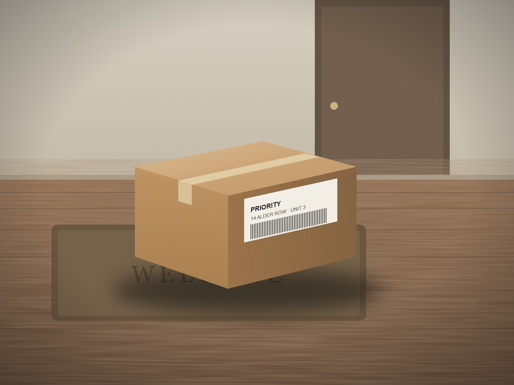
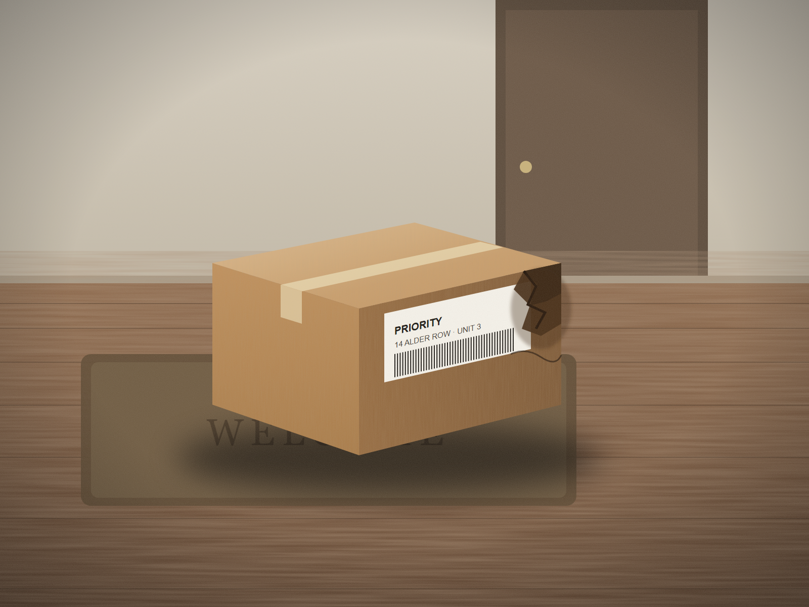
Illustrative scene
Your word against theirs.
01The problem
Editing a photo takes seconds.
Proving it wasn't edited
can take weeks.
01The problem
99%
of insurers have seen manipulated photos.
Source: Verisk, March 2026
01The problem
Detection makes a guess.
A guess doesn't settle a dispute.
Witness
It doesn't guess. It keeps a record.
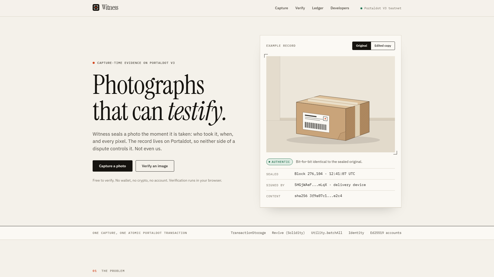
Live product · Portaldot V3 testnet
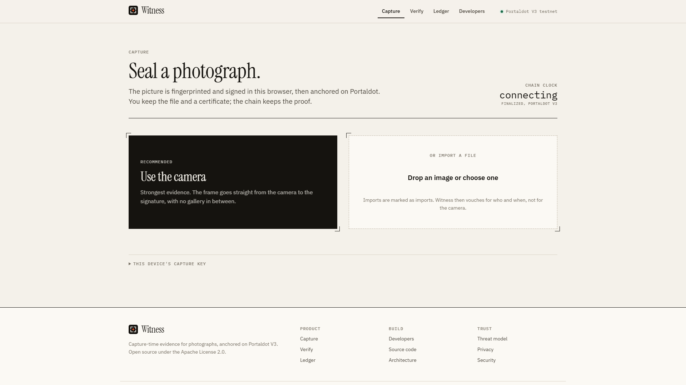
Capture · live on testnet
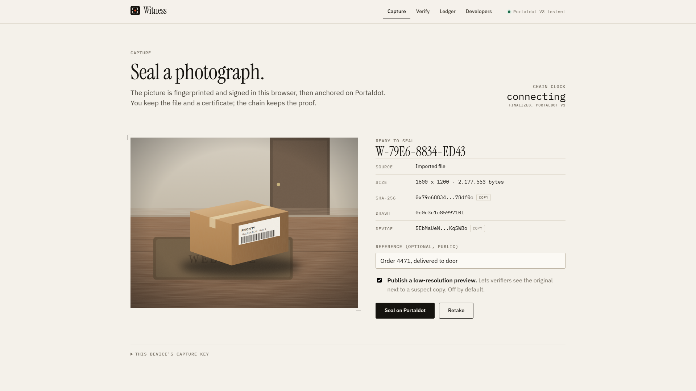
Capture · live on testnet
02One capture, one transaction
Both land together, or neither does.
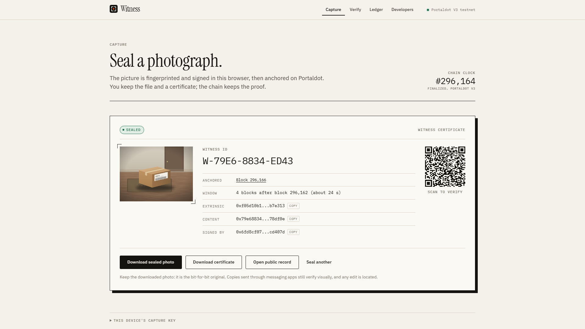
Sealed in block 296,166 · 2 Nov 2026
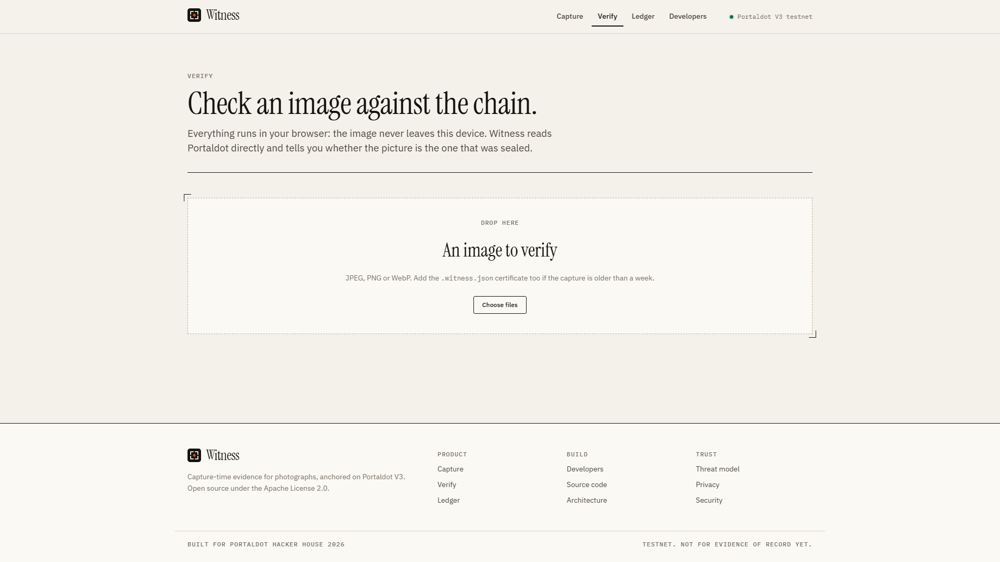
Verify · runs in the browser
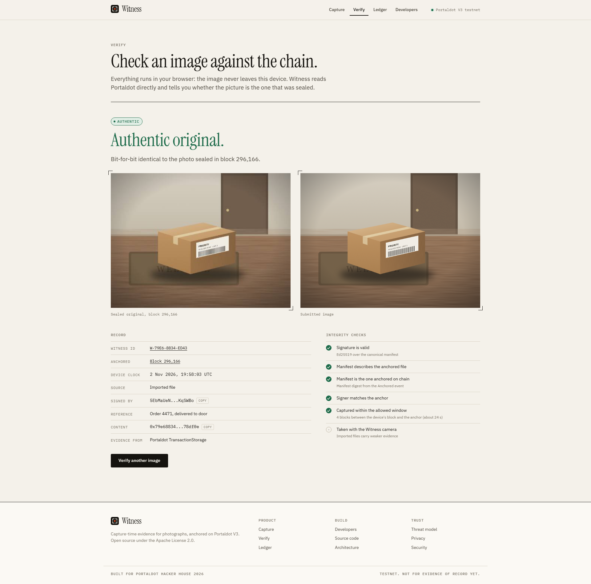
Verify · the original
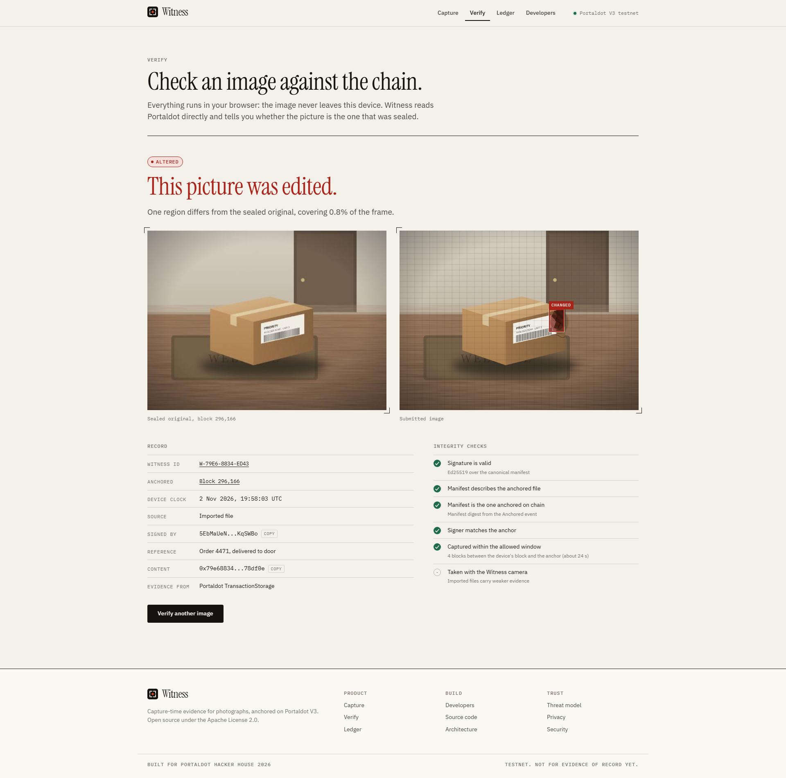
Verify · the buyer's copy
One region changed · 0.8% of the frame
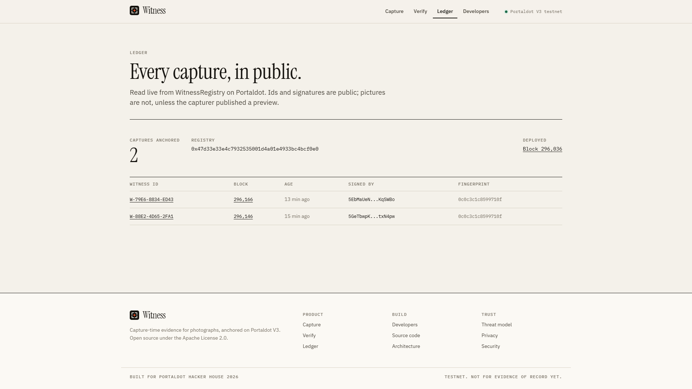
Ledger · read live from the registry
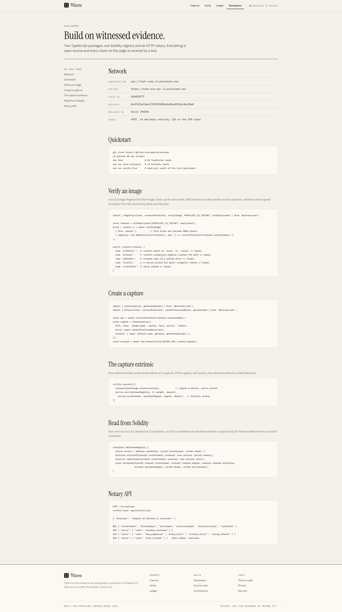
Open source · Apache 2.0
03Where it matters
Returns.
Deliveries.
Rental deposits.
Insurance claims.
Anywhere a photograph has to stand up as evidence.
Photographs that can testify.
opeblow.github.io/witness
Open source · Built on Portaldot V3 · Testnet